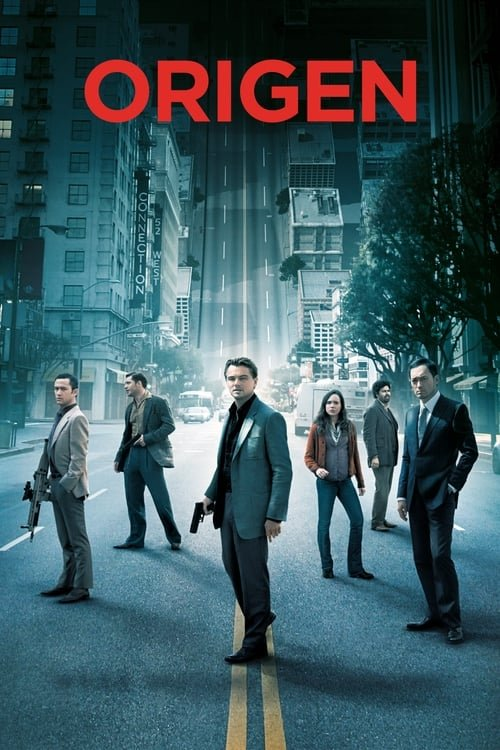

Origen (2010)
Sinopsis Rápida
¿Qué pasaría si pudieras entrar en los sueños de otras personas y robarles sus secretos más preciados? Dom Cobb, un hábil ladrón de sueños, se enfrenta a la misión más peligrosa de su vida: implantar una idea en la mente de un poderoso ejecutivo.
Sinopsis Detallada
En 'Origen', Christopher Nolan nos sumerge en un mundo donde la línea entre la realidad y el sueño se difumina peligrosamente. Dom Cobb y su equipo de especialistas deben infiltrarse en el laberíntico subconsciente de Robert Fischer para plantar una idea, una tarea increíblemente compleja que los lleva a través de capas oníricas cada vez más profundas y peligrosas. La película explora temas fascinantes sobre la memoria, la identidad y la naturaleza de la realidad, todo ello envuelto en una atmósfera de suspenso constante y giros argumentales impredecibles.
¿Por qué tenés que verla?
- Una trama compleja e ingeniosa que te mantendrá al borde del asiento hasta el final.
- La impecable dirección de Christopher Nolan y su innovadora exploración visual de los sueños.
- Su impacto en la cultura popular, inspirando innumerables análisis y debates sobre sus múltiples interpretaciones.
- Actuaciones excepcionales de un elenco estelar.
Idea Extra
Análisis del simbolismo y la arquitectura onírica en 'Origen', comparándolo con la obra de otros artistas y autores que exploran el subconsciente.